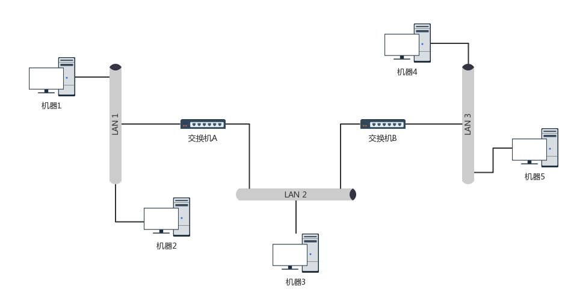
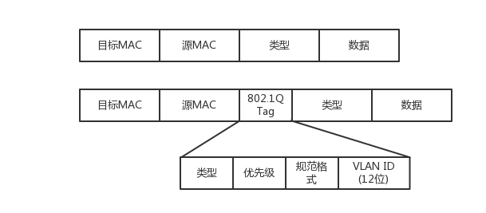

MAC层是用来解决多路访问的堵车问题的，ARP通过在局域网大吼一声的方式来寻找目标MAC地址。交换机有MAC地址学习能力。
1. MAC层#
在物理层中，我们引入了Hub，集线器，这种设备可以将多个终端连起来，但是它会把所有自己收到的信息都复制到其他端口当中。
需要在数据链路层解决的问题有：
- 包的发送方和接收方
- 多个包发送的时候的先后顺序的问题
- 发生错误了怎么办
这些问题都是在数据链路层，也即MAC层(Medium Access Control)，要解决的问题.
做媒体访问控制，控制在往媒体上发数据的时候，谁先发谁后发的问题，防止发生混乱。—— 多路访问规则
下面针对三个问题的解决进行详细分析
1.1 包的发送方接收方的确认#
1.1.1 知道目标和源MAC地址时#
用物理地址，——链路层地址，常被称为MAC地址

1.1.2 只知道目标IP地址时 —— ARP协议#
ARP协议，是已知IP地址，求MAC地址的协议。
在一个局域网内，知道IP，想获得对应的MAC，就是在局域网中大吼一声， 看回应，hhhh

具体询问和回答的报文如下所示：

1.2 多路访问原则#
- 信道划分：分成多个车道，各走各的
- 轮流协议：单双号限行
- 随机接入协议：错峰
1.3 错误处理 —— 循环冗余检测#
看图1，整个数据包的最后四字节叫做CRC，这里是通过XOR算法计算整个包是否在发送的过程中出现了错误
2.交换机#
交换机比起集线器，有了记忆功能。通过学习得到对应的MAC地址。
一台 MAC1 电脑将一个包发送给另一台 MAC2 电脑，当这个包到达交换机的时候，一开始交换机也不知道 MAC2 的电脑在哪个口，所以没办法，它只能将包转发给除了来的那个口之外的其他所有的口。但是，这个时候，交换机会干一件非常聪明的事情，就是交换机会记住，MAC1 是来自一个明确的口。以后有包的目的地址是 MAC1 的，直接发送到这个口就可以了。
当交换机作为一个关卡一样，过了一段时间之后，就有了整个网络的一个结构了，这个时候，基本上不用广播了，全部可以准确转发。当然，每个机器的 IP 地址会变，所在的口也会变，因而交换机上的学习的结果，我们称为转发表。转发表是有过期时间的。
2.1 办公室场景下的交换机使用#
可能有上百个网口需要联网，因此需要多个交换机，形成了一个稍微复杂一些的拓扑结构。

先看看两台交换机的情形。两台交换机连接着三个局域网，每个局域网上都有多台机器。如果机器 1 只知道机器 4 的 IP 地址，当它想要访问机器 4，把包发出去的时候，它必须要知道机器 4 的 MAC 地址。
于是机器 1 发起广播，机器 2 收到这个广播，但是这不是找它的，所以没它什么事。交换机 A 一开始是不知道任何拓扑信息的，在它收到这个广播后，采取的策略是，除了广播包来的方向外，它还要转发给其他所有的网口。于是机器 3 也收到广播信息了，但是这和它也没什么关系。
当然，交换机 B 也是能够收到广播信息的，但是这时候它也是不知道任何拓扑信息的，因而也是进行广播的策略，将包转发到局域网三。这个时候，机器 4 和机器 5 都收到了广播信息。机器 4 主动响应说，这是找我的，这是我的 MAC 地址。于是一个 ARP 请求就成功完成了。
在上面的过程中，交换机 A 和交换机 B 都是能够学习到这样的信息：机器 1 是在左边这个网口的。当了解到这些拓扑信息之后，情况就好转起来。当机器 2 要访问机器 1 的时候，机器 2 并不知道机器 1 的 MAC 地址，所以机器 2 会发起一个 ARP 请求。这个广播消息会到达机器 1，也同时会到达交换机 A。这个时候交换机 A 已经知道机器 1 是不可能在右边的网口的，所以这个广播信息就不会广播到局域网二和局域网三。
当机器 3 要访问机器 1 的时候，也需要发起一个广播的 ARP 请求。这个时候交换机 A 和交换机 B 都能够收到这个广播请求。交换机 A 当然知道主机 A 是在左边这个网口的，所以会把广播消息转发到局域网一。同时，交换机 B 收到这个广播消息之后，由于它知道机器 1 是不在右边这个网口的，所以不会将消息广播到局域网三。
2.1.1 环路问题#
当整个拓扑结构变复杂了以后，可能容易出现环路问题：

我们来想象一下机器 1 访问机器 2 的过程。一开始，机器 1 并不知道机器 2 的 MAC 地址，所以它需要发起一个 ARP 的广播。广播到达机器 2，机器 2 会把 MAC 地址返回来，看起来没有这两个交换机什么事情。
但是问题来了，这两个交换机还是都能够收到广播包的。交换机 A 一开始是不知道机器 2 在哪个局域网的，所以它会把广播消息放到局域网二，在局域网二广播的时候，交换机 B 右边这个网口也是能够收到广播消息的。交换机 B 会将这个广播息信息发送到局域网一。局域网一的这个广播消息，又会到达交换机 A 左边的这个接口。交换机 A 这个时候还是不知道机器 2 在哪个局域网，于是将广播包又转发到局域网二。左转左转左转，好像是个圈哦。
可能有人会说，当两台交换机都能够逐渐学习到拓扑结构之后，是不是就可以了？
然而当广播包从左边的局域网一广播的时候，两个交换机再次刷新三观，原来机器 1 是在左边的，过一会儿，又发现不对，是在右边的，过一会，又发现不对，是在左边的。
在计算机网络中，用最小生成树算法来解决交换机生成环的问题。简而言之，通过比较交换机之间的能力，给他们分不同等级，划分出一棵树。
2.1.2 如何解决广播问题和安全问题？#
- 物理隔离
每个部门有自己的交换机，配置单独的子网
- 虚拟隔离
VLAN，虚拟局域网，一个交换机上会连属于多个局域网的机器。解决方案是在原来的二层的头上加一个TAG，里面有一个VLAN ID，一共12位，可以划分出4096个VLAN
